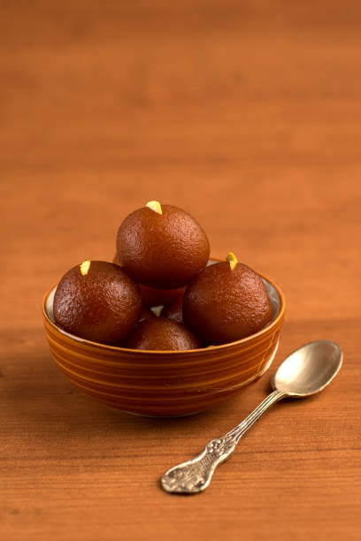
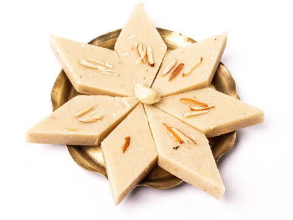
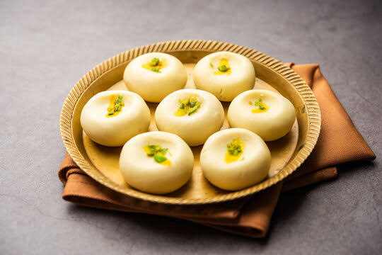

Gulab Jamun
Ingredients:
1 cup dry milk powder ,3 tablespoons all-purpose flour,2 tablespoons ghee (clarified butter), melted
½ teaspoon baking powder, ½ cup warm milk ,1 tablespoon chopped almonds (Optional)
1 tablespoon chopped pistachio nuts (Optional),1 tablespoon golden raisins (Optional), pinch ground cardamom,
1 quart vegetable oil for deep frying,1 ¼ cups white sugar,
7 fluid ounces water,1 teaspoon rose water,1 pinch ground cardamom.
In a large bowl, stir together the milk powder, flour, baking powder, and cardamom. Stir in the almonds, pistachios and golden raisins. Mix in the melted ghee, then pour in the milk, and continue to mix until well blended. Cover and let rest for 20 minutes.
In a large skillet, stir together the sugar, water, rose water and a pinch of cardamom. Bring to a boil, and simmer for just a minute. Set aside.
Fill a large heavy skillet halfway with oil. Heat over medium heat for at least 5 minutes. Knead the dough, and form into about 20 small balls. Reduce the heat of the oil to low, and fry the balls in one or two batches. After about 5 minutes, they will start to float, and expand to twice their original size, but the color will not change much. After the jamun float, increase the heat to medium, and turn them frequently until light golden. Remove from the oil to paper towels using a slotted spoon, and allow to cool. Drain on paper towels and allow to cool slightly.
Place the balls into the skillet with the syrup. Simmer over medium heat for about 5 minutes, squeezing them gently to soak up the syrup. Serve immediately, or chill.

Barfi
Ingredients:
300 mililitre condensed milk
1 cup water
2 1/2 cup milk powder
1 teaspoon powdered green cardamom
2 tablespoon ghee
1 handful pistachios
silver vark as required
1 handful almonds
Soak a few saffron strands in 1 tablespoon of warm milk and set aside. (This step is optional but adds a rich color and flavor
In a heavy-bottomed non-stick pan, melt the ghee over medium heat. Pour in the full-fat milk and bring it to a gentle boil.
Reduce the heat to low and gradually add the milk powder, stirring continuously to avoid lumps. The mixture should be smooth and lump-free.
Add the sugar and mix well. Continue to cook, stirring constantly, until the mixture thickens and starts to leave the sides of the pan.
Stir in the cardamom powder and saffron milk (if using). Mix well.
Grease a square or rectangular tray with a little ghee.
Transfer the Mixture: Pour the thickened mixture into the greased tray. Spread it evenly with a spatula.
Sprinkle the chopped nuts evenly over the surface and gently press them down with a spatula.
Let the barfi cool at room temperature or refrigerate it for about 1-2 hours until it sets completely.
Cut into Pieces: Once set, cut the barfi into squares or diamond shapes using a sharp knife.
Carefully remove the pieces from the tray and serve.Barfi is a popular Bengali sweet made from milk and pistachios . Here's a simple recipe to make this delicious treat


Sandesh
Ingredients:
1 cup of chenna see instructions on how to make chenna
2.5 tbsp of sugar
A small pinch of cardamom powder
A few strands of saffron
1 tbsp of warm milk
A tiny pinch of salt optional
Pour the milk into a heavy-bottomed pan and bring it to a boil. Once the milk starts boiling, reduce the heat to low and add the lemon juice or vinegar gradually while stirring continuously until the milk curdles and the whey separates from the curd.
Line a colander with a muslin cloth or a cheesecloth and pour the curdled milk into it. Gather the edges of the cloth and tie it into a bundle. Rinse under cold water to remove the sourness from the lemon or vinegar. Squeeze out the excess water and hang it for about 30 minutes to drain completely.
Transfer the drained paneer onto a clean, flat surface. Knead it with the heel of your hand for about 8-10 minutes until it becomes smooth and soft.
In a non-stick pan, add the kneaded paneer and cook on low heat for about 5 minutes, stirring continuously to prevent it from sticking. The paneer should become slightly dry but still retain moisture.
Remove the pan from heat and let the mixture cool slightly. Add powdered sugar and cardamom powder. Mix well until the sugar is completely incorporated.
Divide the mixture into small portions and shape them into round or oval balls. You can also use molds to give them different shapes.
Garnish each Sandesh with chopped pistachios or almonds and a saffron strand on top
Sandesh is a popular Bengali sweet made from fresh paneer (cottage cheese). Here's a simple recipe to make this delicious treat